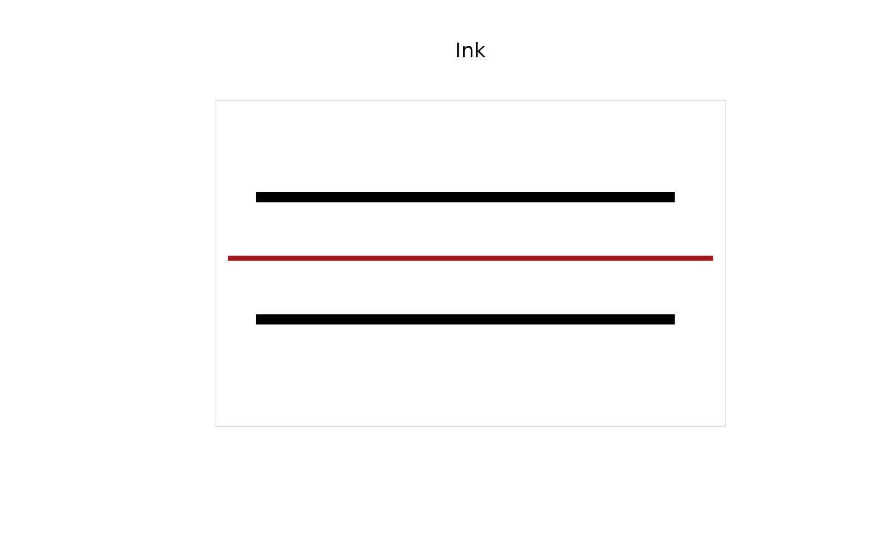

Draws the branches of an `mlv_mat` on the current plot in image coordinates, in the encoding every plot of the package uses: a line through the pixel centres, half a pixel wide, in the skeleton red of `plot(x, "skeleton")`, so that the axis is never mistaken for ink. Use it on [plot.mlv_mat()] or [plot.mlv_drawing()] panels of the same canvas.
Examples
d <- mlv_drawing(list(matrix(c(5, 10, 45, 10), 1),
matrix(c(5, 22, 45, 22), 1)), 50, 32)
m <- compute_mat(d)
plot(m, "ink", legend = FALSE)
draw_mat_axis(m)
